Treinando a Inteligência Artificial
Nesta oficina, propõe-se aos estudantes que atuem como engenheiros de machine learning, treinando uma inteligência artificial (IA) para reconhecer movimentos corporais específicos. Ao contrário de utilizar modelos prontos, eles serão responsáveis por compreender e executar as etapas centrais do ciclo de vida dos dados: captura, rotulagem, treinamento e depuração (debugging).
Estrutura da Oficina
Materiais
Lista de materiais/softwares/componentes necessários
Preparar
25 minApresentação
Nesta etapa, propõe-se iniciar uma investigação sobre o universo da inteligência artificial (IA), com foco específico em como os computadores aprendem e tomam decisões por meio do aprendizado de máquina (Machine Learning). Ao longo dos encontros, o desafio será desenvolver, na prática, um sistema de aprendizado supervisionado utilizando a ferramenta digital Teachable Machine. Oriente a turma na construção de protótipos funcionais, em especial um tradutor visual capaz de reconhecer o próprio nome dos estudantes reproduzido em Língua Brasileira de Sinais (Libras).
Durante o processo, explore o eixo Mundo Digital, analisando como computadores capturam, codificam e armazenam imagens e áudios em formato digital. No eixo Cultura Digital, promova uma discussão crítica sobre as implicações éticas dos algoritmos, ressaltando que a assertividade de qualquer sistema inteligente está diretamente relacionada à qualidade, diversidade e representatividade dos dados utilizados em seu treinamento, o que favorece a problematização dos vieses algorítmicos. Ao longo da atividade, evidencie também aspectos do eixo Pensamento Computacional, ao analisar com a turma as etapas de coleta de dados, treinamento, teste e aprimoramento do modelo.
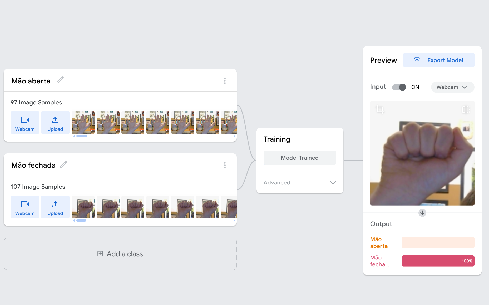
helpPerguntas reflexivas
- Ao ouvir a expressão Inteligência Artificial, quais associações surgem? Em quais situações cotidianas já interagimos com sistemas baseados em IA (feeds de redes sociais, plataformas de streaming, jogos, assistentes virtuais)?
- Como um computador aprende a diferenciar a imagem de um gato da de um cachorro? Trata-se de compreensão conceitual ou de identificação de padrões estatísticos com base em exemplos?
- Uma IA treinada com dados de voz coletados apenas em uma única região do mundo funcionaria adequadamente para reconhecer sotaques e expressões da comunidade escolar? Que papel a diversidade de dados desempenha nesse processo?
Para a construção dos tradutores visuais de Libras e dos sistemas de comando por voz, o componente principal e o coração tecnológico da nossa oficina será o Google Teachable Machine. Trata-se de uma ferramenta digital desenvolvida para tornar o aprendizado de máquina mais visual, rápido e acessível, sendo amplamente utilizada em contextos educacionais e de prototipagem para tornar mais compreensível o funcionamento da IA.
O Teachable Machine opera como um ambiente prático de Aprendizado Supervisionado, o que significa que é possível ensinar a máquina ao definir categorias ("classes"), fornecer exemplos do mundo real (como fotos capturadas pela webcam) e acionar o processo de treinamento para que o sistema identifique padrões nesses dados.
A grande contribuição pedagógica desse software é abstrair a programação tradicional, permitindo aos estudantes que concentrem seus esforços no ciclo estratégico da Ciência de Dados: coleta e organização dos dados, treinamento do modelo e teste de desempenho (inferência).
tips_and_updatesDicas de condução
Embarque
Speedrun de IA!
Para canalizar a curiosidade inicial da turma e promover um primeiro contato direto e descomplicado com a ferramenta, proponha um desafio contra o relógio, denominado Speedrun de IA. Em vez de explicações longas, os estudantes terão exatamente 8 minutos para abrir o software, alimentar um modelo rudimentar de visão computacional com dois estados opostos (Mão aberta vs. Mão fechada), treinar a máquina e observar o reconhecimento em tempo real. Trata-se de uma experiência breve, visualmente impactante e totalmente prática. Antes do início da atividade, organize a turma em duplas, que serão mantidas ao longo de toda a oficina.
- Oriente todas as duplas a
abrir o navegador e acessar o site do Teachable Machine.
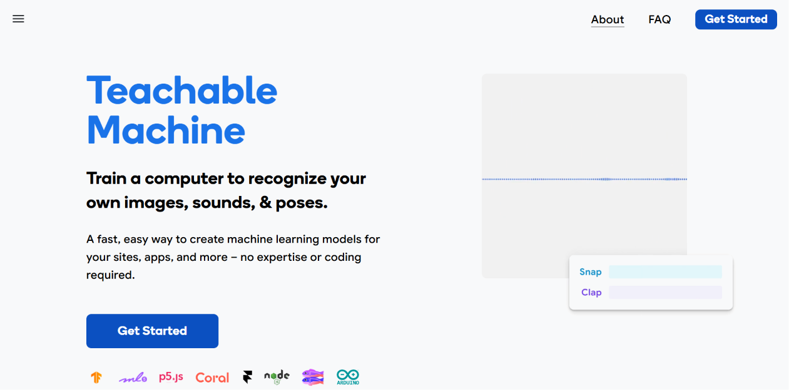
- Clique em “Get Started”
(Começar) e selecione “Image Project” (Projeto de Imagem) e “Standard Image Model”
(Modelo de Imagem Padrão).
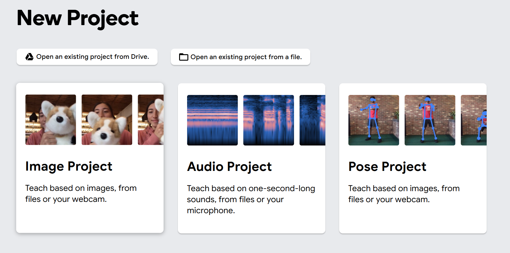
- Ressalte que, ao clicar no
ícone de lápis, é possível renomear as classes.
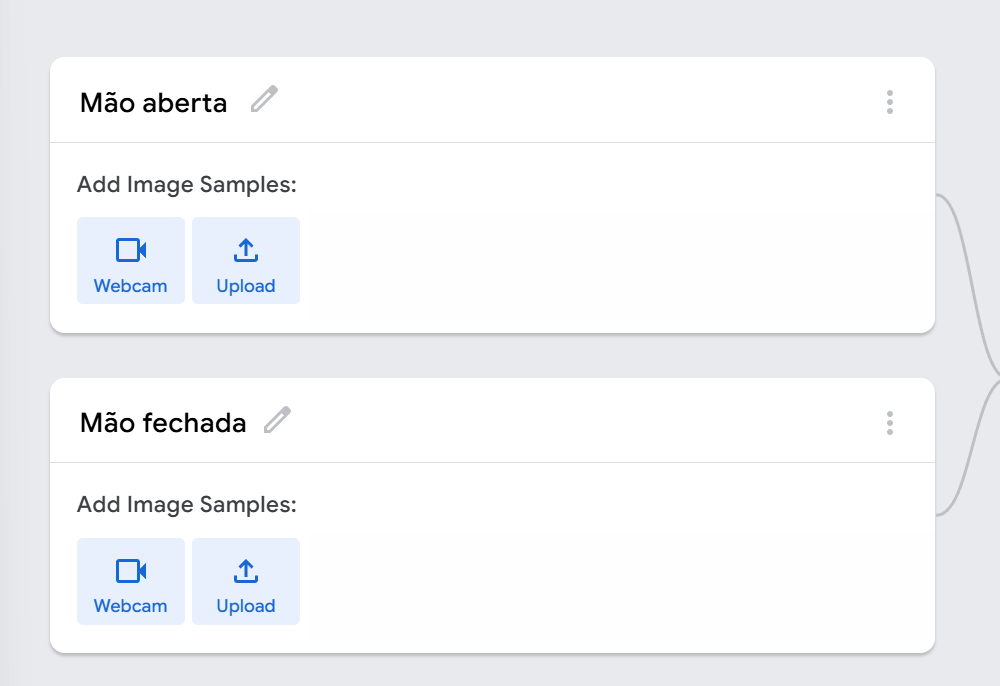
- Oriente que, ao segurar o
botão “Hold to Record”, é possível capturar várias imagens em sequência.
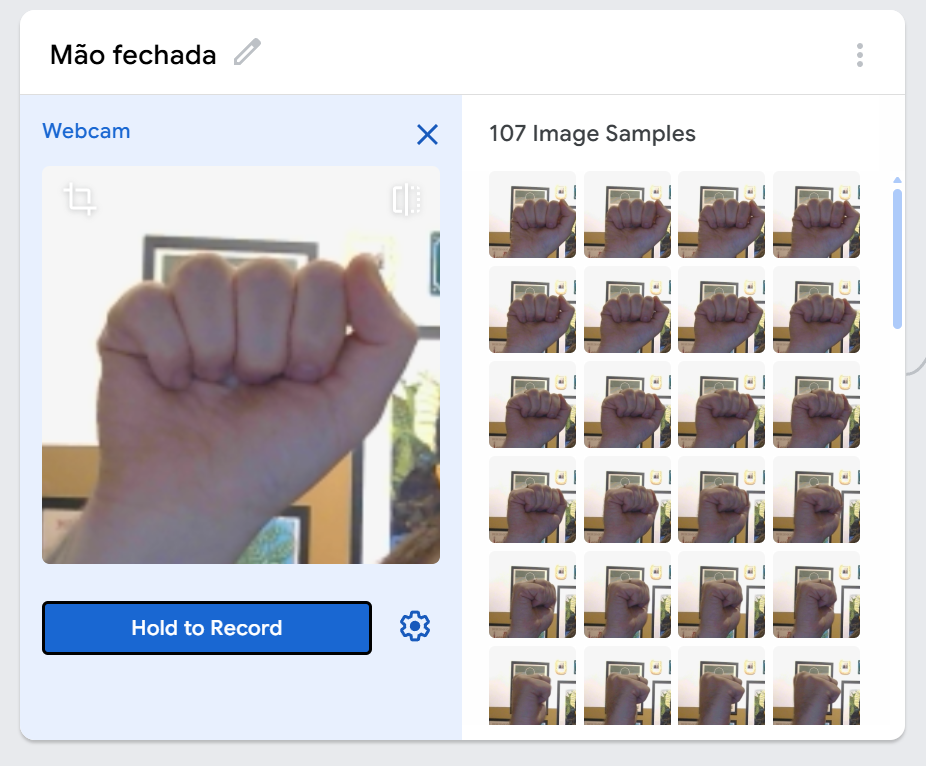
- Explique que, para que o
modelo funcione, é necessário clicar em “Train Model” e que não se deve mudar de aba
ou navegador durante o processo, pois isso pode interromper o treinamento.
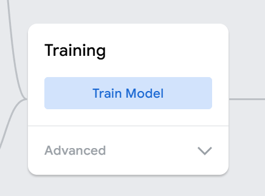
- Finalize informando que o
modelo poderá ser testado na aba “Preview” (Visualização).
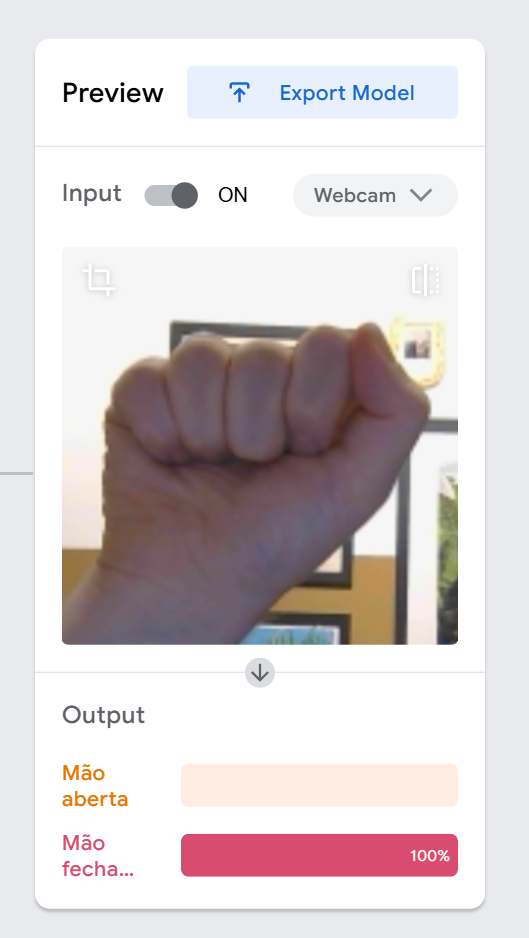
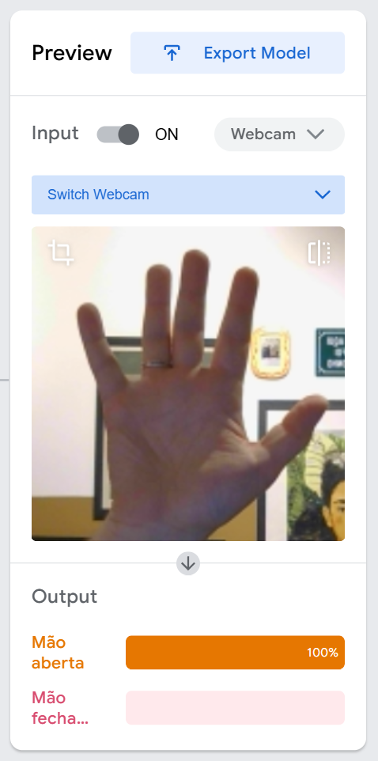
Para gamificar a atividade, utilize um cronômetro com contagem regressiva visível para toda a sala, reforçando a ideia de tempo limitado e estimulando foco e engajamento. Um som ambiente leve pode contribuir para criar um clima de desafio sem comprometer a concentração.
Essa dinâmica funciona como “quebra de gelo” e torna a ferramenta mais acessível e tangível. Em apenas 8 minutos, os estudantes vivenciam, de forma prática, o funcionamento básico de um sistema de IA. O principal ganho pedagógico é perceber que a máquina responde aos dados que recebe e que a qualidade dessas respostas depende diretamente das escolhas feitas durante a coleta e o treinamento.
Para atribuir significado à experiência, conduza uma breve discussão conectando a prática aos conceitos fundamentais.
1. Reconhecimento de padrões e diferenciação entre inteligência humana e IA
"Quando vocês mexeram a mão e o gráfico mudou na tela, o computador entendeu o conceito de 'Mão aberta' ou ele apenas identificou um padrão recorrente de pixels, cores e formas?"
Essa reflexão ajuda a explicitar que a máquina não possui compreensão semântica: ela opera por cálculo estatístico de semelhança entre dados previamente registrados e novas entradas.
2. Aprendizado Supervisionado
"Na dinâmica, vocês criaram os nomes das caixas e seguraram o botão para capturar as fotos. Sabendo disso, por que esse processo é classificado como um Aprendizado Supervisionado? Quem é o verdadeiro responsável pelo que a máquina aprendeu?"
A intenção é que os estudantes reconheçam que o sistema reflete diretamente as decisões humanas sobre organização, rotulagem e seleção de dados.
3. Vieses e limites da IA
"Se nós mudarmos a iluminação da sala agora, se mudarmos o fundo da câmera ou se uma pessoa de outra dupla tentar testar o modelo de vocês, o que acham que vai acontecer com a precisão da IA?"
Uma pergunta como esta permite aos estudantes compreender que um conjunto de dados pequeno ou pouco diverso pode gerar um sistema frágil, capaz de funcionar apenas nas condições em que foi treinado. Isso evidencia a importância de ampliar e diversificar os dados nas próximas etapas.
Criar
110 minProtótipo
Tradutor de Libras
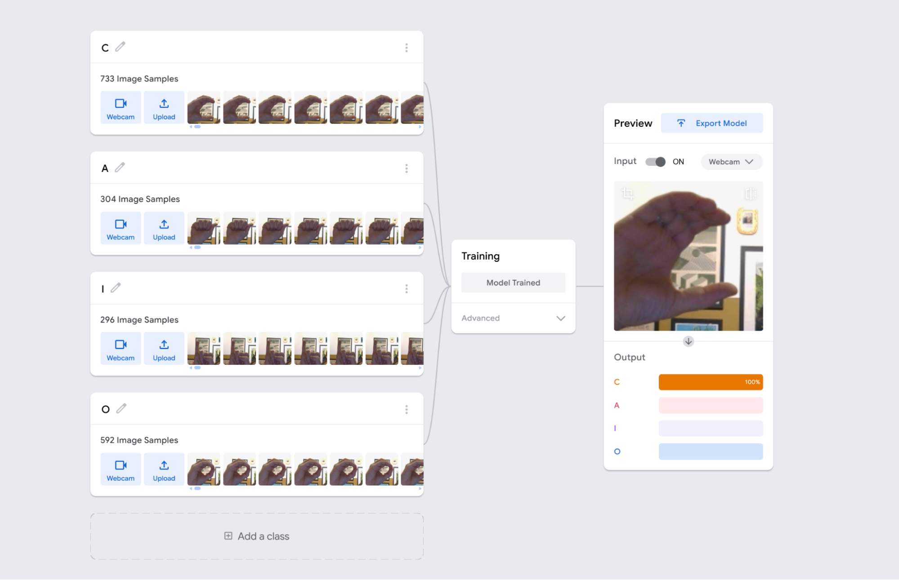
tips_and_updatesDicas de condução
Refletir
45 minAprendizados
Dinâmica de compartilhamento
Antes de iniciar o momento de compartilhamento, é importante entender que o Teachable Machine torna possível compartilhar o projeto. Para isso, localize o botão “Export Model” na área de “Preview” e clique nele.
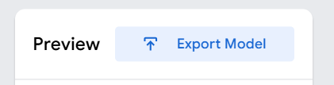
Na tela que será aberta, busque pela opção “Upload my model”.
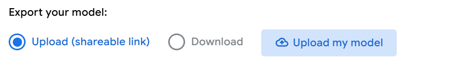
Após alguns instantes, será gerado um link compartilhável para outras pessoas testarem.
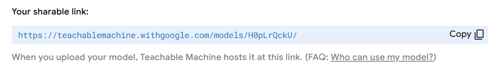
O projeto utilizado para exemplo da atividade pode ser acessado no link: https://teachablemachine.withgoogle.com/models/H0pLrQckU/ Acesso em: 13 jul. 2026.
Gerar o link permite à outras pessoas testar e compartilhar a atividade em diferentes contextos, o que amplia a validação do modelo desenvolvido.
Para este momento, os estudantes irão acessar o sistema da dupla ao lado, fazendo assim com que todos testem outros sistemas. O teste realizado por pessoas que não participaram da criação do modelo funciona como uma etapa de validação externa, além de revelar o grau de generalização do sistema e possíveis fragilidades ainda não identificadas pela dupla criadora. Outro ponto positivo é que, para interagir com outros projetos, os estudantes irão aprender novos sinais, desenvolvendo ainda mais as habilidades em libras.
helpPerguntas reflexivas
- No Teachable Machine, podemos clicar em “Export Model” e gerar um link público para que qualquer pessoa no mundo use a nossa IA. Sabendo o que descobrimos sobre os bugs e os vieses na primeira rodada de treinos, quais são os riscos de disponibilizar publicamente um sistema de IA cujo desempenho ainda não foi amplamente testado em diferentes contextos e usuários?
- Existe uma preocupação comum de que a IA extinguirá muitas profissões no futuro. Sabendo que hoje vocês atuaram como curadores de dados e treinadores de IA, como essa experiência amplia a compreensão sobre o papel humano na construção, supervisão e melhoria contínua de sistemas de IA? Que tipos de novas profissões humanas vão surgir para garantir que esses sistemas inteligentes funcionem sem erros e sem preconceitos?
Para ir além
30 minPara deixar o projeto ainda mais interessante, iremos integrá-lo ao Playground do MIT, criando um sistema responsivo e personalizável que interage com base nos movimentos detectados. Seguem os principais passos do processo.
Passo 1
No Teachable Machine, garanta que o projeto está funcionando. Importe-o caso necessário. Treine o modelo e faça alguns testes. Quando ele estiver identificando corretamente a letra, é possível prosseguir.
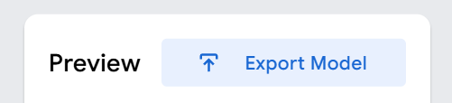
Passo 2
Caso o projeto ainda não possua um link público, clique em “Export Model” e, na janela seguinte, selecione “Upload my Model”. Esse procedimento gera o link necessário para integrar o modelo ao ambiente de programação.
Passo 3
Acesse o link https://playground.raise.mit.edu/create/ e delete o ator laranja clicando no ícone de lixeira.
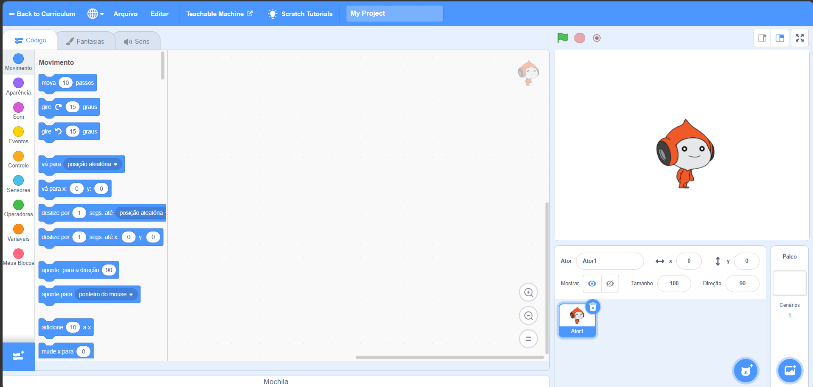
Passo 4
Clique no ícone de gato no canto direito inferior e vá em “Adicione um Ator”. Procure pela primeira letra. Após adicioná-la, mude para a aba “Fantasias” e insira as demais letras como novas fantasias do mesmo ator.
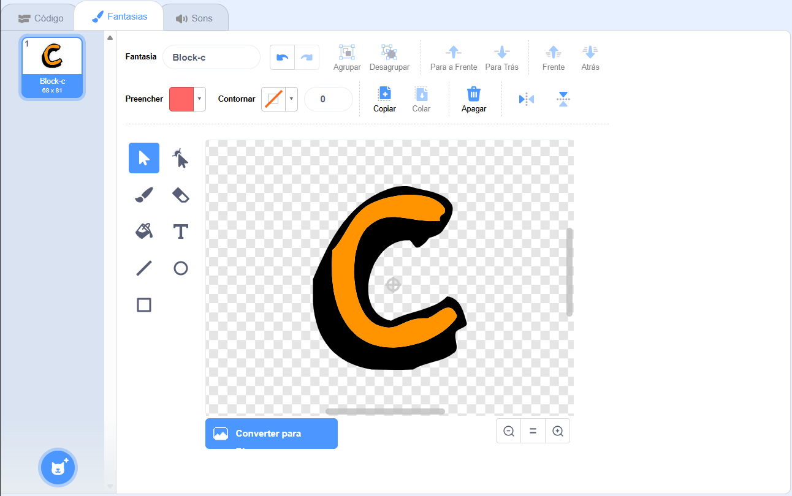
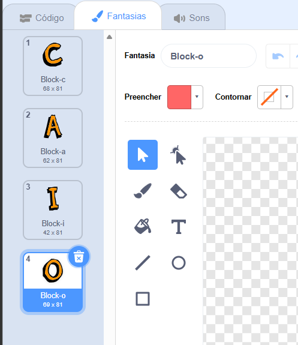
Passo 5
Para fazer a ligação entre o Playground e o Teachable Machine, será necessário adicionar uma extensão. Localize o botão de adicionar extensão no canto inferior esquerdo da interface e procure por “Teachable Machine”.
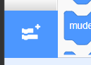
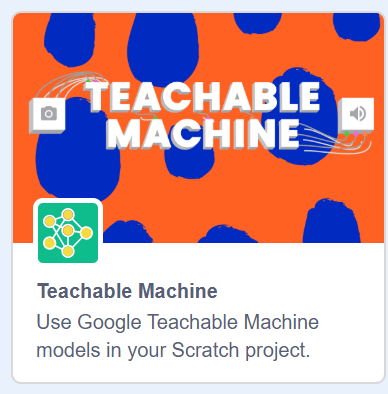
Passo 6
Após a adição, será possível encontrar alguns blocos de detecção de vídeo. Como ainda não estão disponíveis em português, seus nomes aparecerão apenas em inglês.
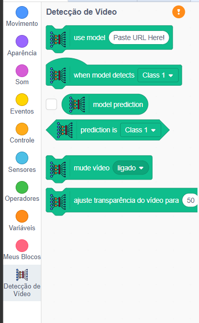
Passo 7
Com a letra selecionada, adicione o evento “Quando o botão bandeira verde for clicado” para disparar alguma ação e o bloco “use model” para conectar as ferramentas, colando o link do Teachable no espaço disponível.
Após copiar o link do Teachable Machine, é necessário fechar a aba do site antes de retorná-lo ao Scratch. Ao inserir o link, o Scratch solicitará uma nova permissão para uso da câmera. Caso o Teachable Machine permaneça aberto, a câmera poderá não ser ativada corretamente.
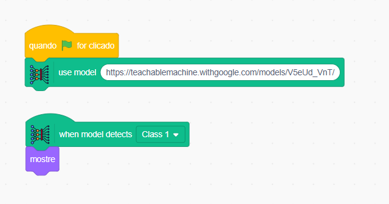
Passo 8
Agora é possível programar o modelo para detectar cada uma das letras e fazer uma ação. Neste exemplo, a ação programada é a troca de fantasia, mas o modelo pode acionar diferentes respostas visuais ou sonoras, conforme a criatividade da dupla.
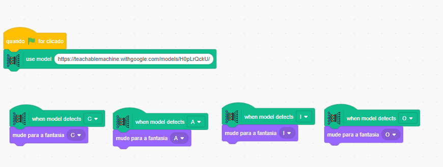